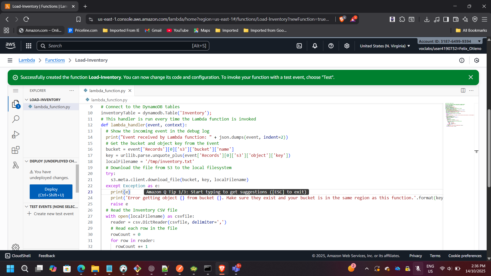
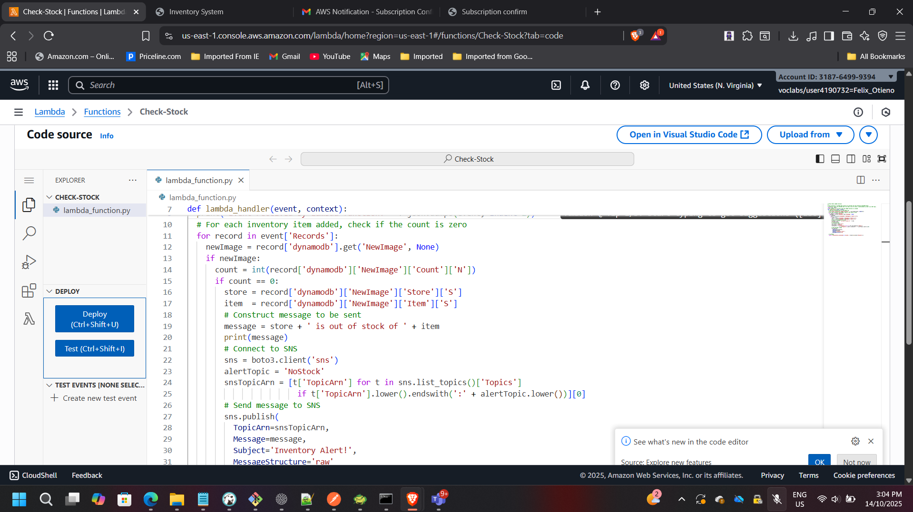
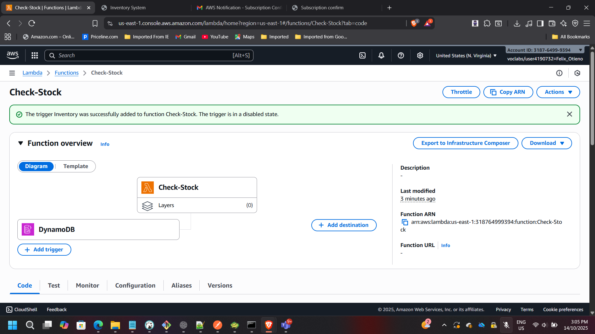
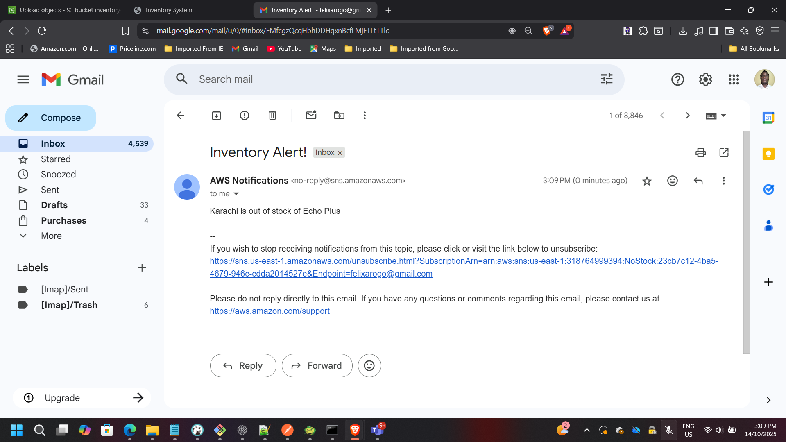

Building a Serverless Inventory Intelligence System on AWS
Project: Serverless Inventory Intelligence on AWS
Timeline: September 2025
Role: Solutions Architect (Serverless & Event-Driven Design)
Focus: Event-Driven Automation & Serverless Architecture
Services: AWS Lambda, Amazon S3, Amazon DynamoDB, DynamoDB Streams, Amazon SNS, IAM, CloudWatch
Executive Summary
Designed and implemented a fully serverless, event-driven inventory management system using AWS managed services.
The architecture eliminates traditional servers and enables:
- Automated data ingestion
- Real-time inventory monitoring
- Event-driven alerting
- Near-zero operational overhead
- Pay-per-use cost efficiency
The system processes uploaded inventory files, updates a DynamoDB table, and automatically sends alerts when stock levels reach zero — demonstrating modern cloud-native design principles.
Architecture Overview
The solution follows an event-driven serverless pattern:
- Inventory CSV file uploaded to Amazon S3
- S3 triggers Load-Inventory Lambda
- Data inserted into Amazon DynamoDB
- DynamoDB Streams trigger Check-Stock Lambda
- Out-of-stock events published to Amazon SNS
- Email notifications sent to subscribers

Phase 1: Data Ingestion Automation
Creating the Load-Inventory Lambda Function
A Lambda function named Load-Inventory was created to parse CSV files uploaded to S3 and insert inventory data into DynamoDB.
Configuration:
- Runtime: Python 3.x
- Trigger: Amazon S3
- IAM execution role with scoped permissions
- Timeout optimized for CSV parsing workloads

IAM Role Configuration (Least Privilege)
The Lambda execution role was configured following least-privilege principles.
Permissions granted:
Load-Inventory Lambda
- S3 Read access
- DynamoDB PutItem access
Check-Stock Lambda
- DynamoDB Stream Read access
- SNS Publish permissions
This ensures secure service-to-service communication without over-permissioning.
Configuring Amazon S3 Event Trigger
The S3 bucket was configured to automatically invoke the Load-Inventory Lambda when new objects are created.
Event Type:
s3:ObjectCreated:*

This removes the need for polling or manual processing.
Testing Data Loading
Uploaded a sample inventory CSV file to the S3 bucket.
The Lambda function executed automatically and inserted parsed records into DynamoDB.

Verified that the DynamoDB table populated successfully:

Phase 2: Real-Time Stock Monitoring
Enabling DynamoDB Streams
To detect inventory changes in real time, DynamoDB Streams were enabled.
Stream View Type:
NEW_AND_OLD_IMAGES
Streams allow change data capture without impacting application performance.
Creating the Check-Stock Lambda Function
A second Lambda function named Check-Stock was implemented.
Responsibilities:
- Monitor DynamoDB Stream events
- Detect when item quantity equals zero
- Publish notification message to SNS

Configuring DynamoDB Stream Trigger
The Check-Stock Lambda was attached to DynamoDB Streams using an event source mapping.

This ensures real-time evaluation of inventory changes.
Phase 3: Notification Automation
Creating the SNS Topic
An Amazon SNS topic named NoStock was created to handle alert distribution.

Email Subscription Setup
An email endpoint subscription was configured and confirmed.

This enables automatic alert delivery when inventory reaches zero.
End-to-End Workflow Validation
To validate the full architecture:
- Uploaded a CSV file containing out-of-stock items
- Observed Lambda execution via CloudWatch
- Verified DynamoDB update
- Confirmed SNS email notification delivery
Inventory State Transition

Email Notification Received

Architectural Benefits Achieved
Event-Driven Automation
No manual intervention required once deployed.
Scalability
Lambda scales automatically based on file upload volume.
Fault Isolation
Failures in notification logic do not impact ingestion.
Cost Optimization
No idle compute resources — pure pay-per-use model.
Operational Simplicity
Fully managed AWS services reduce maintenance overhead.
Architectural Impact
This project demonstrates:
- Serverless system design
- Event-driven architecture patterns
- IAM least-privilege configuration
- Real-time stream processing
- Cross-service AWS integration
- Observability using CloudWatch
- Secure notification workflows
The solution reflects production-grade serverless design patterns aligned with modern enterprise cloud architecture practices.